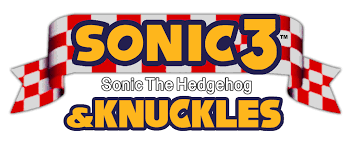
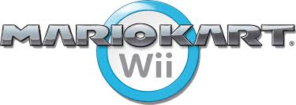
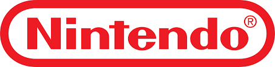
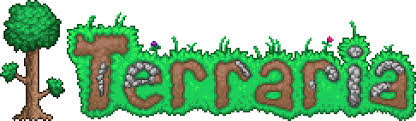

Video Games are the best!
Over the course of my whole life, I feel like video games have had the most impact on me. In fact, it's what I'm going to school for! I wouldn't know if I'd be here now if it wasn't for them.

My Personal Favorites
Here are just a few of my favorite games and some info on them as well! Click each title and hover over the text to highlight it and learn even more!
| Title | Description | Creator |
|---|---|---|
|  | Made in 1994 for the Sega Genesis, as the "culmination" of everything that is good and fun about Sonic all in one package. As a result of combining the cartridges of Sonic 3 + Sonic and Knuckles, you can play the game as it was always meant to be played. With a total of 14 zones to speed through, a revolutionary save feature for progress, and 3 different playable characters that bring their own spin on the classic Sonic formula. A must play for all Sonic fans! |

|
|  | Released on the Wii in 2008, Mario Kart Wii is a timeless classic in terms of racing games. There's no doubt that any Mario Kart game can bring the fun and excitement to anyone that plays it, there seems to be something special about this one. With the ability to choose between the classic automatic drift formula, as well as the manual drift option for more advanced, competitive players like myself. Not to mention one of the first racers to include online multiplayer, you can enjoy endless fun and gain experience playing with people all around the world in real-time! Mario Kart Wii was truly revolutionary for it's time, and can still bring tons of excitement and fun to everyone! |  |
|  | As a multi-platform 2D sandbox adventure game, released in 2011 for almost every gaming platform imaginable, Terraria is a timeless classic complete with tons of items, treasure, and bosses to encounter. Some people often like to compare this title to the ultimate sandbox experience of Minecraft. However, I believe that the 2 are very different and unique in a lot of different ways. With a focus on constant upgrading and becoming more powerful to take on new challenges, Terraria offers all the simple fun of an adventure game, while simultaneously adding more complexity and strategy as you progress through the game. Definetely a need-to-play for any video game enthusiast! | |

|
First released in 2011 for PC and coded in Java, Minecraft is a game where you explore a world made entirely of blocks, like a giant digital Lego set. You can gather resources, build anything you imagine, and survive against creatures in Survival mode, or have unlimited materials to create freely in Creative mode. It’s all about creativity, adventure, and shaping the world however you like, either alone or with friends. | |

|
A collection of sports minigames released alongside the Nintendo Wii as a pack-in title in 2006. Wii Sports is one of the most top-selling video games of all time! There is simply nothing that compared to it, at the time it was revolutionary with it's new motion control capabilities and endless replayability! Offering more than just 5 simple sports to play, it also includes very interactive training and fitness modes to hone your skills and keep in shape along the way. Besides the fact that it was bundled with almost every Wii sold, there's a reason why it is one of the most recognized video games ever made. You can ask anyone of they ever played it in their lifetime and 99% of people will tell you yes, because it was everywhere! |